Time Zone Widgets for iPhone & iPad
Keep the world's time at your fingertips — without opening an app. Daylight-aware Home Screen and Lock Screen widgets, free to start.
See the widgets on a real iPhone
Actual Home Screen and Lock Screen captures — daylight-aware shading and all. This is exactly how Time Zone Buddy looks on your iPhone.
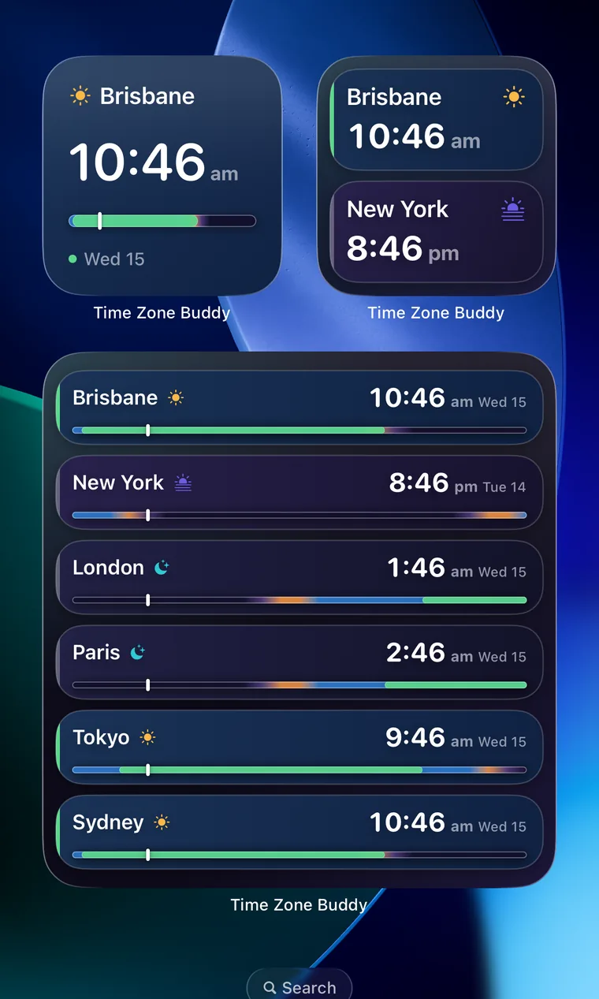
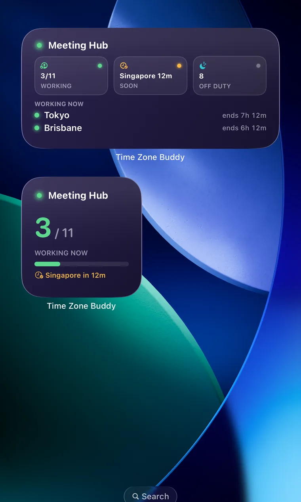
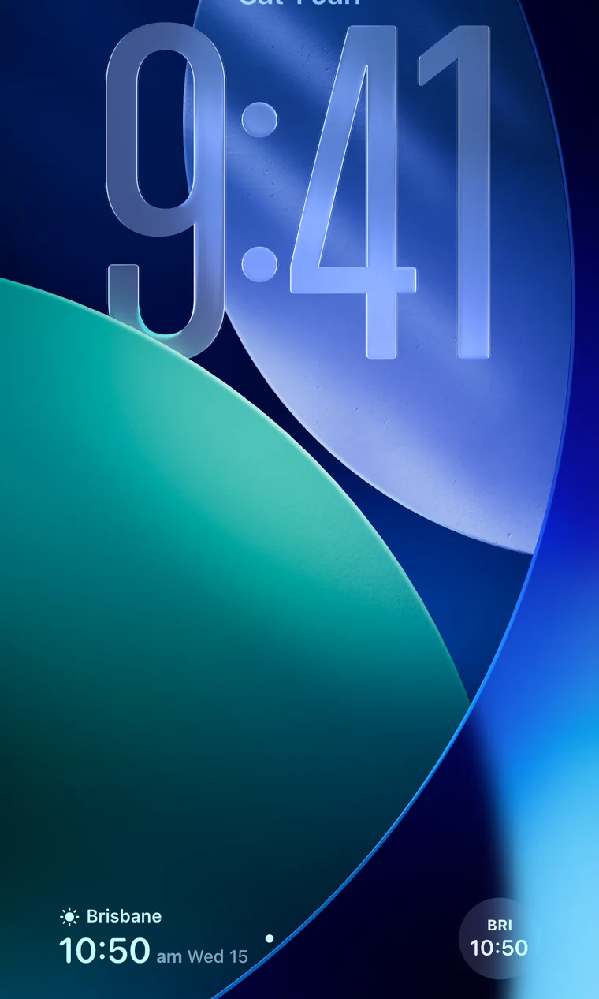
Every widget, up close
Every size, straight from the app — each one uses the same live daylight shading, so a glance tells you day, night, or working hours.
Home Screen
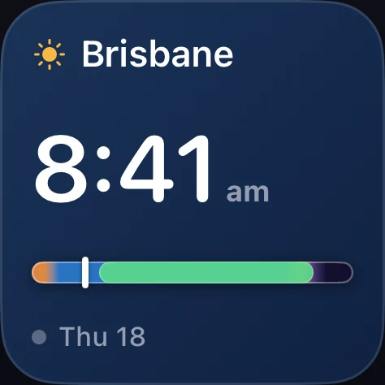
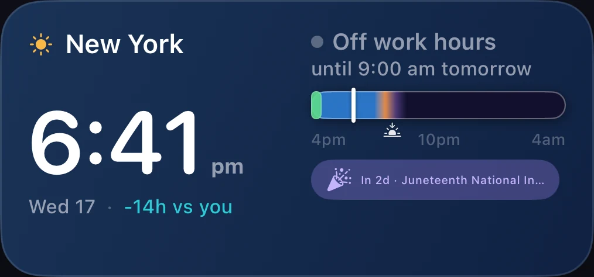
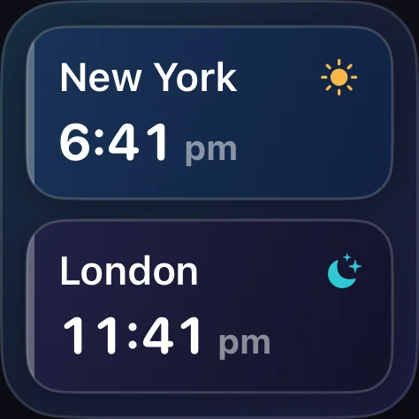
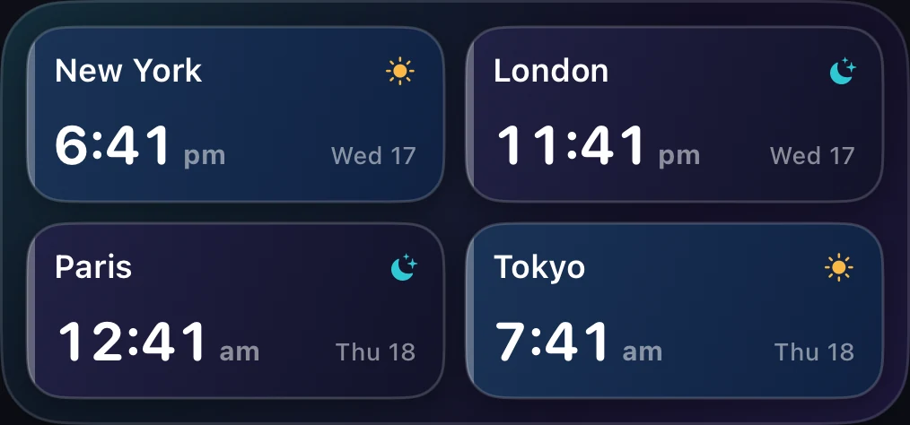
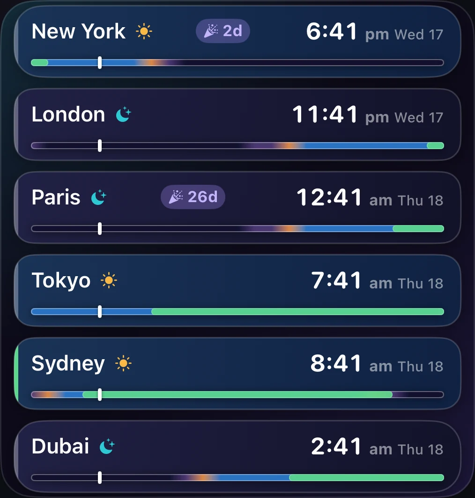
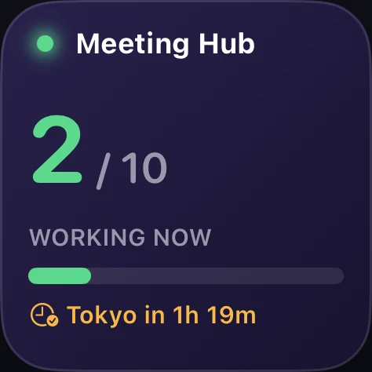
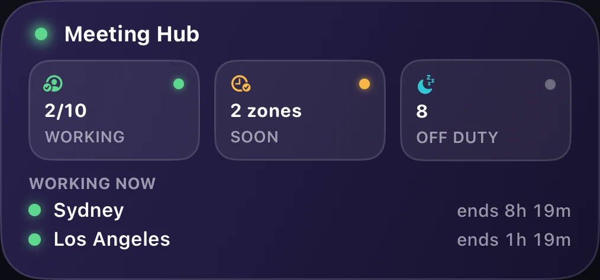
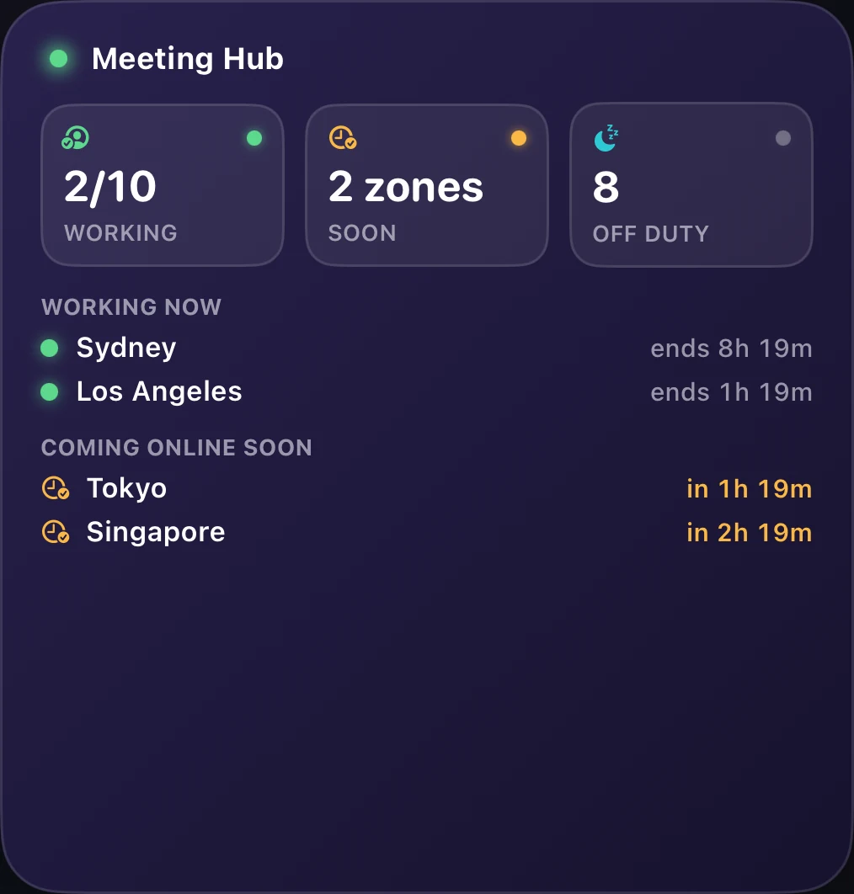
Lock Screen
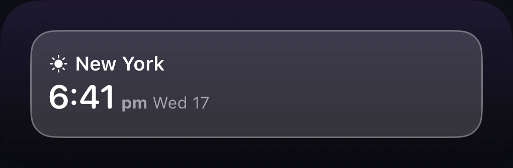
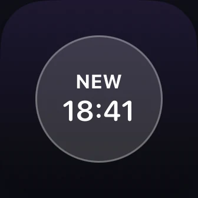
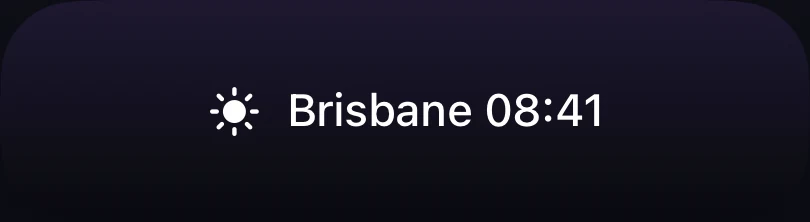
StandBy
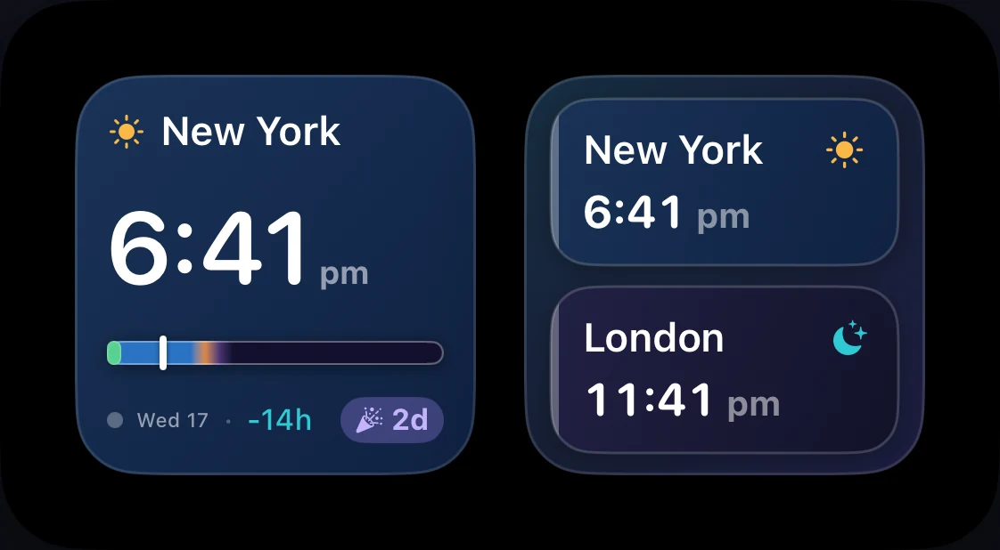
What is a time zone widget for iPhone?
An iPhone time zone widget lets you see the current time in any city or country directly on your Home Screen or Lock Screen — no tapping, no app switching. Whether you work with a team in London, family in Tokyo, or clients in New York, a time zone widget puts their local time one glance away.
Time Zone Buddy goes beyond a plain clock widget. Each iOS widget uses the same daylight-aware shading as the app itself — shifting from warm amber at sunrise to vivid cerulean at midday to deep navy at night — so you can instantly see not just the time, but whether someone is awake, working, or asleep.
Every iOS widget, explained
Single Zone — Small Free
The compact Home Screen widget. Shows your chosen city's live local time with the full daylight-aware shading — a real-time colour that tells you at a glance whether it's morning, midday, or night there. Tap to open the zone directly in the app.
Single Zone — Medium Free
The wider Home Screen widget adds a full-day timeline arc and a work-hours status line — showing you the next work-start or work-finish time for that zone. Ideal for your primary remote colleague or client city.
Multi-City — Small, Medium & Large Free · Plus for 4–6 cities
A wall of clocks for every city you track. The small size shows two cities free; medium and large step up to four and six, each tile tinted by its own live daylight phase so you can read the whole world at a glance. Large adds an upcoming public-holiday chip on paid tiers.
Lock Screen — Circular Free
The circular Lock Screen clock is free on every tier. It shows the current time for any saved city, sitting neatly alongside your other Lock Screen complications — glance at your iPhone and instantly know what time it is on the other side of the world.
Lock Screen — Inline Lifetime & Plus
A compact inline Lock Screen widget that displays the city name and current local time as a single line — perfect for minimal Lock Screen layouts. Shows at a glance whether your contact is in day or night hours.
Lock Screen — Rectangular Lifetime & Plus
The larger rectangular Lock Screen widget gives you more detail — city name, local time, and UTC offset — all without unlocking your iPhone. Great for travellers who need a second time zone always visible.
Meeting Hub — Small, Medium & Large Lifetime & Plus
The most powerful time zone widget for remote teams. Meeting Hub shows who across all your tracked zones is currently in work hours, who's coming online soon, and who's off duty — updated live. The medium and large sizes list each zone's name and current local time. Tap to open the Meeting Overlap finder instantly.
How to add a time zone widget to your iPhone
- 1 Download Time Zone Buddy from the App Store and add the time zones you want to track.
- 2 Long-press your Home Screen until the icons jiggle, then tap the + button in the top-left corner.
- 3 Search for "Time Zone Buddy" in the widget gallery and select it.
- 4 Choose your widget size — small or medium for Single Zone (free), or Meeting Hub for a team overview (Lifetime & Plus). Tap Add Widget.
- 5 Tap the widget to configure which saved city or zone it displays, then tap Done. That's it — your time zone widget is live.
For Lock Screen widgets: swipe to the Lock Screen, long-press, tap Customise, then add a Time Zone Buddy Lock Screen widget in the same way. The circular Lock Screen clock is free; the inline and rectangular formats require Lifetime or Plus.
Widget questions, answered
More from Time Zone Buddy
The iOS widgets are just one part of Time Zone Buddy. The full app includes a world clock with daylight-aware zone cards, a time zone converter and meeting planner, DST push notifications, and much more — with no personal data collected.
Add a time zone widget. Free.
Download Time Zone Buddy for iPhone and iPad.